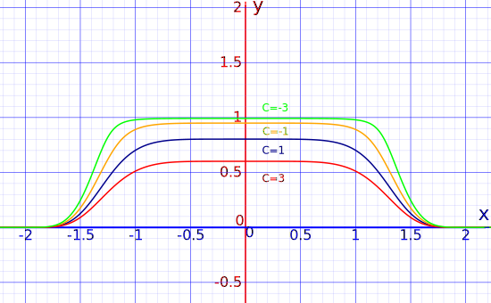
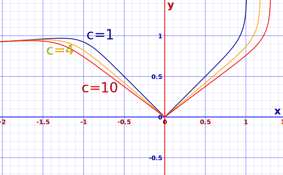
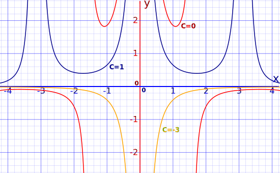

The Bernoulli Differential Equation
How to solve this special first order differential equation
A Bernoulli equation has this form:
dydx + P(x)y = Q(x)yn
where n is any Real Number but not 0 or 1
When n = 0 the equation can be solved as a First Order Linear Differential Equation.
When n = 1 the equation can be solved using Separation of Variables.
For other values of n we can solve it by substituting
u = y1−n
and turning it into a linear differential equation (and then solve that).
Example 1: Solve
dydx + x5 y = x5 y7
It is a Bernoulli equation with P(x)=x5, Q(x)=x5, and n=7, let's try the substitution:
u = y1−n
u = y-6
In terms of y that is:
y = u(−16)
Differentiate y with respect to x:
dydx = −16 u(−76) dudx
Substitute dydx and y into the original equation dydx + x5 y = x5 y7
−16u(−76) dudx + x5u(−16) = x5u(−76)
Multiply all terms by −6u(76)
dudx − 6x5u = −6x5
The substitution worked! We now have an equation we can hopefully solve.
Simplify:
dudx = 6x5u − 6x5
dudx = (u−1)6x5
Using separation of variables:
duu−1 = 6x5 dx
Integrate both sides:
∫1u−1 du = ∫6x5 dx
Gets us:
ln(u−1) = x6 + C
u−1 = ex6 + C
u = e(x6 + c) + 1
Substitute back y = u(−16)
y = ( e(x6 + c) + 1 )(−16)
Solved!
And we get these example curves:

Let's look again at that substitution we did above. We started with:
dydx + x5y = x5y7
And ended with:
dudx − 6x5u = −6x5
In fact, in general, we can go straight from
dydx + P(x)y = Q(x)yn
n is not 0 or 1
to:
dudx + (1−n)uP(x) = (1−n)Q(x)
Then solve that and finish by putting back y = u(−1n−1)
Let's do that in the next example.
Example 2: Solve
dydx − yx = y9
It is a Bernoulli equation with n = 9, P(x) = −1x and Q(x) = 1
Knowing it is a Bernoulli equation we can jump straight to this:
dudx + (1−n)uP(x) = (1−n)Q(x)
Which, after substituting n, P(X) and Q(X) becomes:
dudx + 8ux = −8
Now let's try to solve that.
Unfortunately we cannot separate the variables, but the equation is linear and is of the form dudx + R(X)u = S(x) with R(X) = 8x and S(X) = −8
Which we can solve with steps 1 to 9:
Step 1: Let u=vw
Step 2: Differentiate u = vw
dudx = vdwdx + wdvdx
Step 3: Substitute u = vw and dudx = v dwdx + w dvdx into dudx + 8ux = −8:
vdwdx + wdvdx + 8vwx = −8
Step 4: Factor the parts involving w.
vdwdx + w(dvdx + 8vx) = −8
Step 5: Set the part inside () equal to zero, and separate the variables.
dvdx + 8vx = 0
dvv = −8dxx
Step 6: Solve this separable differential equation to find v.
∫dvv = − ∫8dxx
ln(v) = ln(k) − 8ln(x)
v = kx-8
Step 7: Substitute v back into the equation obtained at step 4.
kx-8 dwdx = −8
Step 8: Solve this to find v
kx-8 dw = −8 dx
k dw = −8x8 dx
∫ k dw = ∫ −8x8 dx
kw = −89x9 + C
w = 1k( −89 x9 + C )
Step 9: Substitute into u = vw to find the solution to the original equation.
u = vw = kx-8k( −89 x9 + C )
u = x-8 ( − 89 x9 + C )
u = −89x + Cx-8
Now, the substitution we used was:
u = y1−n = y-8
Which in our case means we need to substitute back y = u(−18) :
y = ( −89 x + c x-8 ) (−18)
Done!
And we get this nice family of curves:

Example 3: Solve
dydx + 2yx = x2y2sin(x)
It is a Bernoulli equation with n = 2, P(x) = 2x and Q(x) = x2sin(x)
We can jump straight to this:
dudx + (1−n)uP(x) = (1−n)Q(x)
Which, after substituting n, P(X) and Q(X) becomes:
dudx − 2ux = − x2sin(x)
In this case, we cannot separate the variables, but the equation is linear and of the form dudx + R(X)u = S(x) with R(X) = −2x and S(X) = −x2sin(x)
Solve the steps 1 to 9:
Step 1: Let u=vw
Step 2: Differentiate u = vw
dudx = vdwdx + wdvdx
Step 3: Substitute u = vw and dudx = vdwdx + wdvdx into dudx − 2ux = −x2sin(x)
vdwdx + wdvdx − 2vwx = −x2sin(x)
Step 4: Factor the parts involving w.
vdwdx + w(dvdx − 2vx) = −x2sin(x)
Step 5: Set the part inside () equal to zero, and separate the variables.
dvdx − 2vx = 0
1vdv = 2xdx
Step 6: Solve this separable differential equation to find v.
∫1v dv = ∫2x dx
ln(v) = 2ln(x) + ln(k)
v = kx2
Step 7: Substitute u back into the equation obtained at step 4.
kx2dwdx = −x2sin(x)
Step 8: Solve this to find v.
k dw = −sin(x) dx
∫k dw = ∫−sin(x) dx
kw = cos(x) + C
w = cos(x) + Ck
Step 9: Substitute into u = vw to find the solution to the original equation.
u = kx2cos(x) + Ck
u = x2(cos(x)+C)
Finally we substitute back y = u-1
y = 1x2 (cos(x)+C)
Which looks like this (example values of C):

The Bernoulli Equation is attributed to Jacob Bernoulli (1655−1705), one of a family of famous Swiss mathematicians.